UDN
Search public documentation:
UsingKActors
日本語訳
中国翻译
한국어
Interested in the Unreal Engine?
Visit the Unreal Technology site.
Looking for jobs and company info?
Check out the Epic games site.
Questions about support via UDN?
Contact the UDN Staff
中国翻译
한국어
Interested in the Unreal Engine?
Visit the Unreal Technology site.
Looking for jobs and company info?
Check out the Epic games site.
Questions about support via UDN?
Contact the UDN Staff
UE3 Home > Static Meshes > Using KActors
UE3 Home > Physics > Using KActors
UE3 Home > Level Designer > Using KActors
UE3 Home > Physics > Using KActors
UE3 Home > Level Designer > Using KActors
Using KActors
Overview
Placement
- In the Content Browser, select the StaticMesh you want to add to the map as a KActor.
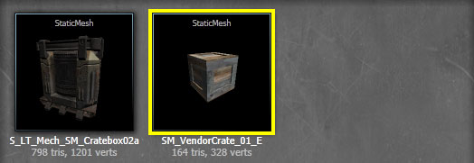 - Right-click in the viewport where you want to add the mesh and choose Add RigidBody: [MeshAssetPath] from the context menu. The location does not need to be exact. You can always reposition, rotate, scale the mesh afterwards.
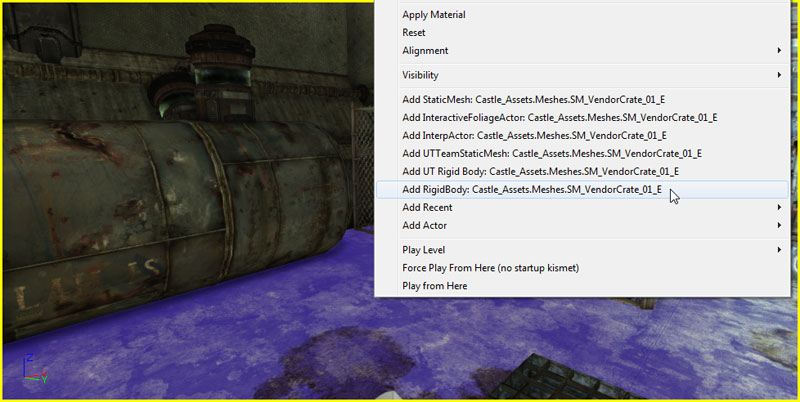 - The StaticMesh has been placed in the map as a KActor, as seen in the Property Window.
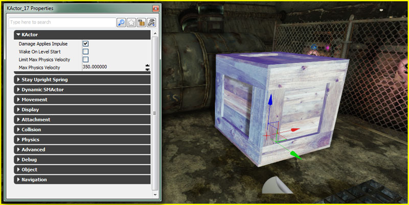
KActor Setup
After placing a KActor in the level, there are properties that may need to be adjusted to get the object to behave properly.
KActor
- Damage Applies Impulse
- If enabled, damage taken by the KActor will apply an impulse, causing the object to move away from the damage location. The magnitude of the impulse is determined by the DamageType of the damage taken, specifically the KDamageImpulse property.
- Wake On Level Start
- If enabled, the KActor will be simulated as soon as the level starts. By default, KActors start the level "asleep". This means the physics simulation is not active and they will apear static until they are awakened by some outside force. For certain situations this can be preferable. Consider a pile of crates; unless acted upon by something, the crates would not move and thus have no reason to be simulated immediately when the level begins. However, if you do want your KActors to be active when the level begins, you can enable the Wake On Level Start property.
- Limit Max Physics Velocity
- If enabled, the velocity of the KActor will be limited according to the Max Physics Volocity proeprty.
- Max Physics Volocity
- Specifies the maximum velocity the KActor can travel at when Limit Max Physics Velocity is enabled.
Stay Upright Spring
- Enable Stay Upright Spring
- If enabled, the physics simulation will apply a torque to the KActor's rotation to attempt to keep the it upright, i.e. the local Z-axis of the KActor aligned with the world Z-axis.
- Stay Upright Torque Factor
- The amount of torque applied in order to keep the KActor upright. This is scaled depending on how far the KActor is from being upright.
- Stay Upright Max Torque
- The maximum amount of torque to apply in order to keep the KActor upright. This is used to clamp the scaled Stay Upright Torque Factor.
Conversion to/from Other Actors
- In the viewport, select the actor you want to convert to a KActors.
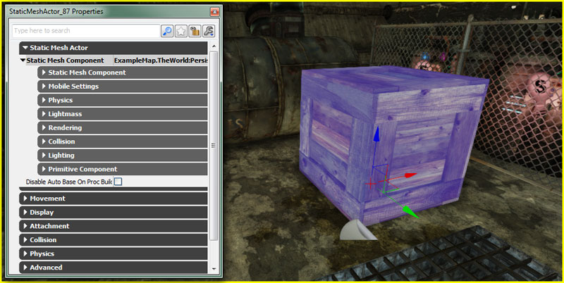 - Right-Click on the actor and choose *Convert > Convert [CurrentActorType] to KActors.
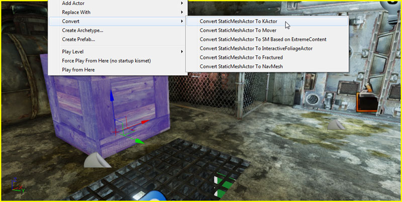 - The actor has been converted to a KActor, as seen in the Property Window.
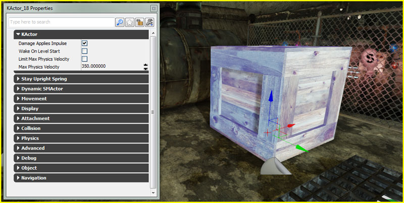
Material Override
- In the viewport, select the KActor you want to assign a new Material to and press F4 to open its properties in the Property Window.
- In the Rendering category of the StaticMeshComponent under DynamicSMActor, add a new item to the Materials array by clicking the 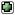 button. If the StaticMesh has more than one material slot, you may need to add more than one item as the items in the array match the material slots of the StaticMesh.
- In the Content Browser, select the Material you want to apply to KActor in the map.
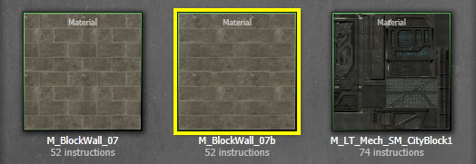 - Press the button for the corresponding item in the Materials array to assign the material. The mesh is now displayed with the Material applied.
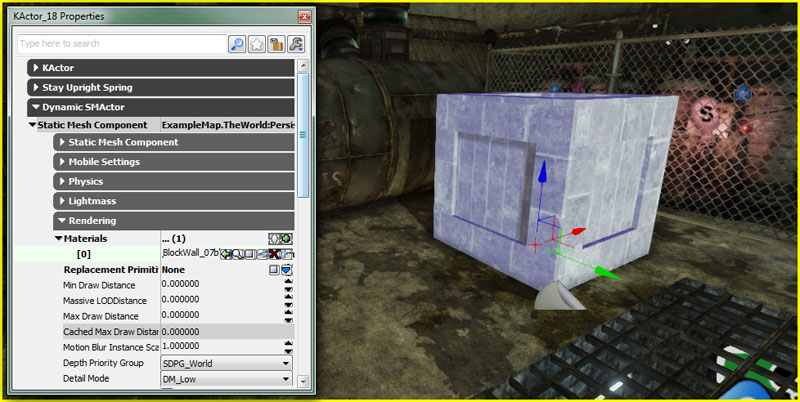
- In the Content Browser, locate the Material you want to apply to KActor in the map.
- Left-Click on the Material in the Content Browser and drag the mouse (while holding the left mouse button down) from the Content Browser to the section of the KActor in the viewport you want to apply the Material to.
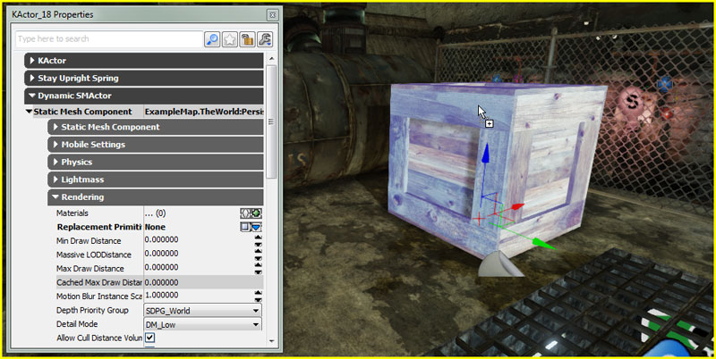 - Release the left mouse button to apply the Material. The mesh is now displayed with the Material applied and the Materials array in the Property Window has been updated.
Physical Material
- In the viewport, select the KActor you want to assign a new PhysicalMaterial to and press F4 to open its properties in the Property Window.
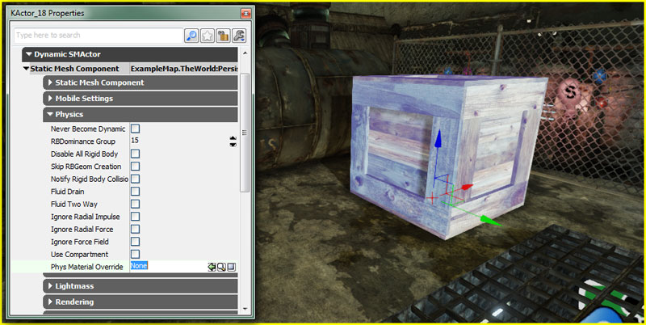 - In the Content Browser, select the Material you want to apply to KActor in the map.
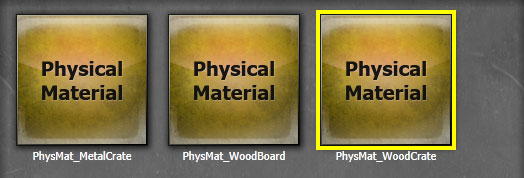 - In the Physics category of the StaticMeshComponent under DynamicSMActor, press the button for the PhysMaterialOverride property to assign the PhysicalMaterial.
Constraints and KActors
- In the Actor Classes browser, select the type of constraint you wish to use.
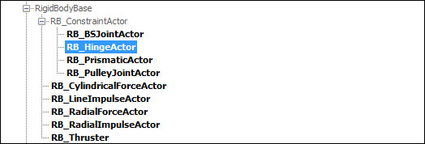 - In the viewport, right-click in the location you want to place the constraint and choose Add [ConstraintType] Here. You can always reposition and rotate the constraint after placing it.
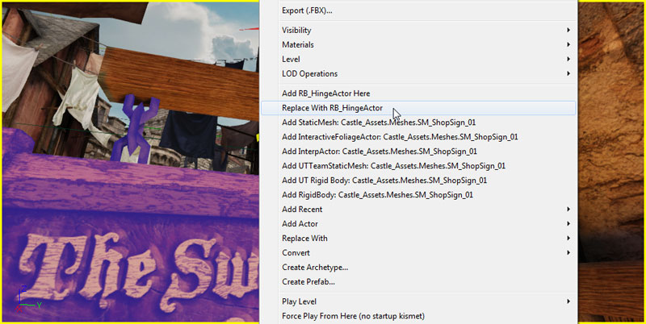 - Select the constraint and press F4 to view its properties. Press the Lock Selected Actors button to lock the Property Window.
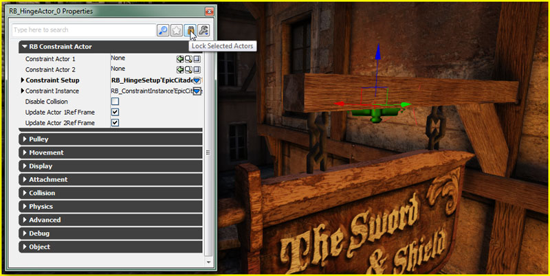 - Select the KActor and then press the button for the ConstraintActor1 property in the RB Constraint Actor category. A red bounding box is displayed around the KActor to show it has been constrained to the ConstraintActor1 property. A blue box would be displayed for an actor constrained to the ConstraintActor2 property.
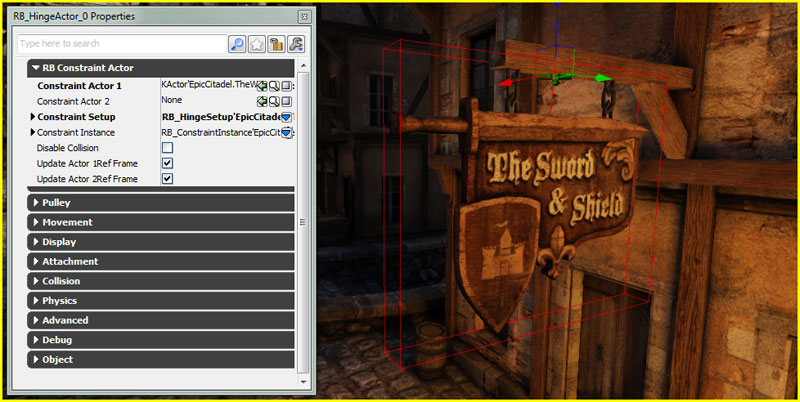
The ConstraintActor2 property is left empty. This constrains the KActor to the world at the location of the constraint actor. - Set the desired properties on the constraint. This example has limited the rotation solely to 90 degrees around the twist axis.
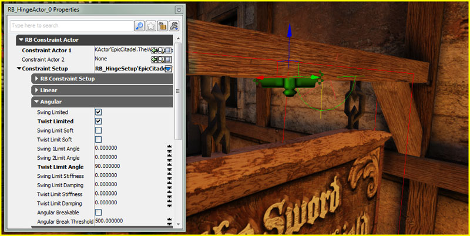 - Testing the constrained KActor in-game, it now swings when a force is applied.
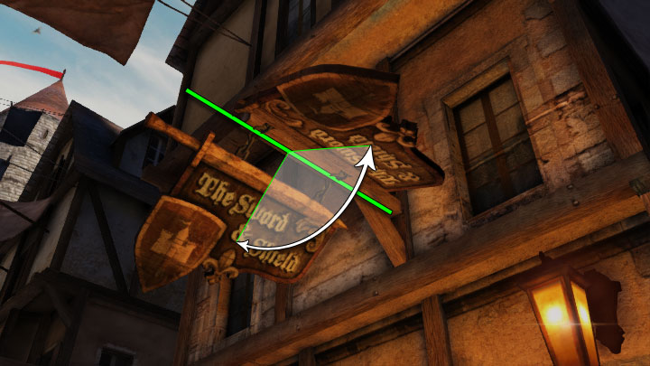